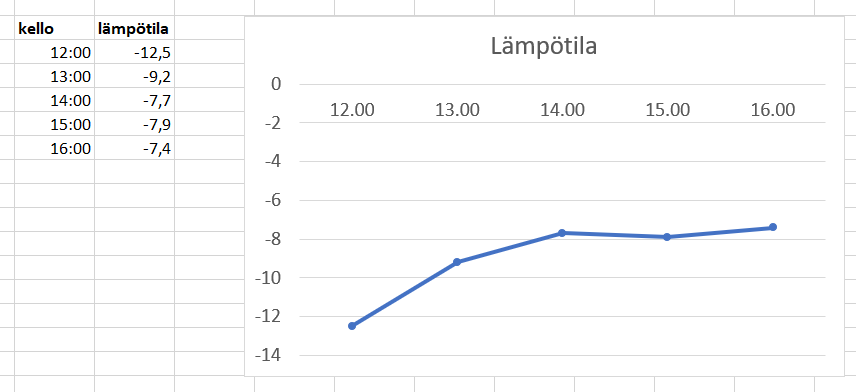

Tilastolliset muuttujat
Contents
Tilastolliset muuttujat¶
Tilastotieteessä muuttujalla tarkoitetaan jotakin tutkittavan asian ominaisuutta. Muuttuja voi olla esimerkiksi henkilön pituus, henkilön äidinkieli tai henkilön mielipide uutuusjogurtin mausta. Muihin kuin ihmisiin liittyviä muuttujia voivat olla vaikkapa jokiveden lämpötila, tuotteen myyntimäärä, tai tehtaalta tilatun auton väri.
Muuttujien arvot puolestaan ovat vastauksia kysymyksiin:
”Kuinka pitkä olet?”
”Mikä on mielipiteesi uutuusjogurtin mausta asteikolla 1-5?”
”Mikä oli lämpömittarin lukema joessa tänä aamuna?”
Muuttujien arvot voivat siis olla sanallisia ilmaisuja tai mittalukuja.
Jos muuttujan saamat arvot on sanallisia, niin muuttuja on kvalitatiivinen (laadullinen).
Jos muuttujan saamat arvot ovat lukuja, niin muuttuja on kvantitatiivinen (määrällinen).
Osaa tilastotieteen työkaluista voidaan käyttää molemmille muuttujatyypeille, osaa taas pelkästään kvalitatiivisille. Näihin erilaisiin menetelmiin perehdytään myöhemmin.
Asteikot¶
Muuttujien arvot kuuluvat aina jollekin asteikolle. Kun kerää aineistoa johonkin ilmiöön liittyen, pitää jo etukäteen pohtia, millä asteikolla kiinnostavaa asiaa voisi mitata. Tilastotieteessä käytetään yleisesti neljää erilaista asteikkoa. Osa asteikoista toimii kvalitatiivisten muuttujen mittaamiseen, osa kvantitatiivisten ja osa molempien.
Luokitteluasteikko
Järjestysasteikko
Välimatka-asteikko
Suhdelukuasteikko
Kun muuttujien arvot on astettu sopivalle asteikolle, niin muuttujan arvoja voidaan esittää kuvaajana. Tarkastellaan seuraavana, millaisia kuvaajia muodostuu eri asteikoille kuuluvista muuttujien arvoista.
Luokitteluasteikko
Luokitteluasteikko sopii kvalitatiivisille muuttujille. Muuttuja voi olla esimerkiksi henkilön mielipide talviajasta. Tätä voitaisiin mitata kysymyksellä “Kannatatko pysyvään talviaikaan siirtymistä?” Mahdollisia muuttujen arvoja olisivat tällöin “kyllä”, “ei” ja “en osaa sanoa”. Muuttujien arvojen jakauma olisi tällöin eri vastaukset antaneiden ihmisten osuus koko kyselyyn osallistuneiden ihmisten määrästä. Tällaista jakaumaa voi kuvata esimerkiksi ympyräkaaviolla.
Järjestysasteikko
Järjestysasteikkoa voidaan käyttää kvantitatiivisille muuttujille ja myös kvalitatiivisille muuttujille sillä ehdolla, että muuttujien arvot voidaan asettaa mielekkääseen järjestykseen. Jos muuttujana on henkilön opiskelumotivaatio, niin sen arvoja voitaisiin mitata esimerkiksi numeroasteikolla 1-5, mutta toisaalta myös sanallisella asteikolla “erittäin huono - melko huono - kohtalainen - melko hyvä - erittäin hyvä”. Jakauman kuvaamiseen sopii pylväs- tai palkkikaavio.
Välimatka-asteikko
Muuttujat arvoja voidaan esittää välimatka-asteikolla silloin, kun muuttujien arvot ovat lukuja, joiden arvoja voidaan mielekkäästi verrata toisiinsa yhteen- ja vähennyslaskutoimituksia käyttämällä, mutta ei kerto- tai jakolaskutoimituksilla. Jonakin päivänä lämpötila voi laskea +10 asteesta +5 asteeseen. Näitä kahta lukua vertaamalla voisi ajatella, että lämpötila puolittui. Mutta entä, jos lämpötila muuttuu +3 asteesta -2 asteeseen? Viiden asteen viilenemisen on mielekkäämpi tapa kuvata tätä muutosta. Välimatka-asteikon muuttujille tyypilliseen tapaan nolla astetta ei ole sen erityisempi kuin muutkaan lämpötilat, eikä siksi määritä asteikolle mitään kiinteää alkupistettä.
Muuttujan arvo voi kuvata vaikkapa lämpötilan ajallista muutosta. Tällöin sitä voi luontevasti esittää viivakaaviolla. Välimatka-asteikon muuttujia voidaan käyttää myös jakaumissa. Voidaan esimerkiksi tilastoida, kuinka monena päivänä kesäloman aikana oli vähintään 20 astetta lämmintä. Tähän palataan toisessa kohdassa.

Suhdelukuasteikko
Suhdelukuasteikko sopii sellaisille kvantitatiivisille muuttujille, joita on mielekästä vertailla toisiinsa myös kerto- ja jakolaskuilla. Näillä muuttujan arvoilla on jokin merkityksellinen nollakohta. Esimerkiksi palkan määrä tai kasvavan kasvin pituus ovat lukuarvoltaan vähintään nolla. Voidaan sanoa, että vuonna 2025 palkka on 3 % korkeampi kuin vuonna 2023, tai että puun taimi on syyskuussa kaksi kertaa niin pitkä kuin kesäkuussa. Myös suhdeasteikon havaintoja voidaan kuvata viivakaaviolla. Näistäkin muuttujista voidaan tehdä jakaumia samaan tapaan kuin välimatka-asteikon muuttujista. Mediasta tuttuja esimerkkejä ovat erilaiset palkkatilastot.
Kuvan data pohjautuu Autoalan tiedotuskeskuksen aineistoon.